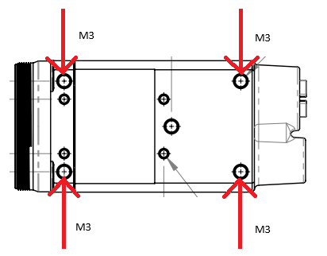

Shock and Vibration¶
To ensure the camera’s stability, LUCID’s TRI054S camera is tested under the following shock/vibration conditions. After the testing, the camera showed no physical damage and could produce normal images during normal operation.
| Test | Standard | Parameters |
|---|---|---|
| Shock | DIN EN 60068-2-27 | Each axis (x/y/z), 20g, 11ms, +/- 10 shocks |
| Bump | DIN EN 60068-2-27 | Each axis (x/y/z), 20g, 11ms, +/- 100 bumps |
| Vibration (random) | DIN EN 60068-2-27 | Each axis (x/y/z), 4.9g rms, 15-500Hz, 0.05g2/Hz acceleration, 30min per axis |
| Vibration (sinusoidal) | DIN EN 60068-2-6 | Each axis (x/y/z), 10-58Hz: 1.5mm, 58-500 Hz: 10g, 1 oct/min, 1 hour 52 min per axis |
During the test, the Triton camera was mounted by securing the four M3 mounting holes on the bottom of the camera as illustrated below.
To mimic a real camera usage scenario, a dummy lens mass is attached to the camera lens mount during the shock and vibration test. The dummy lens has the following properties.
| Mass | 66 grams |
| Center of mass from C-mount | 16 mm |
An IP67 lens tube (LUCID Part Number: IPTC-D355L599) was then installed outside of the lens mass.